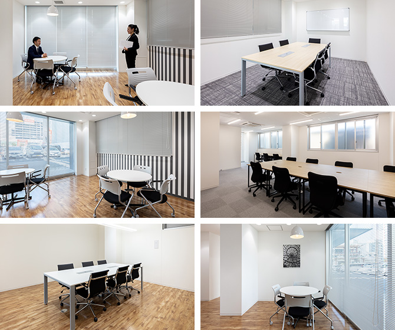

【個室レンタルオフィス】
オープンオフィス大宮駅西口
- オフィス詳細
- 周辺ガイド
オープンオフィス大宮駅西口がNEW OPEN
オープンオフィス大宮駅西口センターは、再開発が進むJR「大宮駅」西口より徒歩5分というロケーションのレンタルオフィス・コワーキングスペースです。2018年に竣工した新築オフィスになりますので、最新の設備が整うオフィス環境となっております。
オープンオフィス大宮駅西口が提供するオフィスサービス
-
 高速インターネット＜光ファイバー＞
高速インターネット＜光ファイバー＞
- 100Mbpsの光ファイバーによるブロードバンド環境をご用意しました。各部屋に配線済みですので、パソコンに繋げばすぐLAN経由で高速インターネットを利用出来ます。
-
 ネットワーク・カラーレーザープリンタ+スキャナー
ネットワーク・カラーレーザープリンタ+スキャナー
- ネットワークを利用して、各お部屋のパソコンから印刷できます。プリンタをご用意いただく必要もございません。
スキャナー機能も搭載しております。
-
 カラーレーザーコピー
カラーレーザーコピー
- フロア内にご用意してあります。カード方式でコピーが出来ますので、小銭の準備が不要です。
-
 ICカードキーによる入室管理
ICカードキーによる入室管理
- 専用ICカードを使ったホテル式のスマートシステムを用いて、セキュリティーを向上させています。
-
 ミーティングルーム（会議室）
ミーティングルーム（会議室）
- 商談・会議にご利用いただける共有スペースをご用意しています。インターネットで簡単に予約をしていただけます。
-
 無線LAN（WiFi）
無線LAN（WiFi）
- 共有スペースとミーティングスペースにて、無線LAN(WiFi)サービスをご利用いただけます。

オープンオフィス大宮駅西口の特徴

さいたま市の中心、大宮エリア
交通の要所「大宮駅」より徒歩5分
最新設備整う新築オフィス
埼玉、北関東を統括する支店・営業所としても最適
働き方改革の実践の場に
オフィス周辺のMap
オープンオフィス大宮駅西口近隣のスポット
- ■銀行
- 三井住友銀行 大宮支店
三菱UFJ銀行 大宮支店
みずほ銀行 大宮支店
埼玉りそな銀行 大宮支店
埼玉りそな銀行 大宮西支店
- ■レストラン
- 大宮 伊勢錦 （会席料理）
吉野鮨 （寿司）
クラウンレストラン （フレンチ）
喰心 meat Dining （ステーキ）
- ■ホテル
- パレスホテル大宮
ホテルメトロポリタンさいたま新都心
マロウドイン大宮
アパホテルさいたま新都心駅北
- ■レジャー
- ライザップ大宮西口店
ゴールドジム大宮さいたま - ■映画館
- MOVIXさいたま
イオンシネマ大宮
オープンオフィス大宮駅西口の住所・アクセス
- 住所:
- 埼玉県さいたま市大宮区桜木町1-366-9 オープンオフィス大宮駅西口ビル 1F－5F
- 空港からのアクセス:
- 羽田空港より京急線「品川駅」経由、JRで「大宮駅」まで約60分
羽田空港よりリムジンバスで「大宮駅西口」まで約75分
成田空港より成田エクスプレスで「大宮駅」まで約110分
成田空港よりリムジンバスで「大宮駅」まで約100分 - 電車からのアクセス:
- JR、新幹線、東武線、ニューシャトル「大宮駅」西口より徒歩5分
- お車でのアクセス:
- 大宮駅西口。そごう大宮店の裏手
リージャスグループの説明
リージャス・グループは、柔軟なワークスペースを提供する世界最大の企業です。そのネットワークは世界120カ国1,100都市、3300拠点に及びます。会員数は250万人で、業界で成功を収める大小様々な企業や起業家の方々にご利用いただいています。
リージャスは、個室タイプのレンタルオフィス、コワーキングスペースなど多彩なオフィスプラン、近年需要が高まるモバイルワークやバーチャルオフィス、障害復旧サービスの提供を通じ、お客様が予算やワークスタイルに合わせて仕事を行うことができる環境を提供いたします。